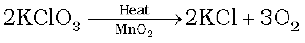

7.11 Dioxygen
Preparation
Dioxygen can be obtained in the laboratory by the following ways:
(i) By heating oxygen containing salts such as chlorates, nitrates and permanganates.

(ii) By the thermal decomposition of the oxides of metals low in the electrochemical series and higher oxides of some metals.
2Ag2O(s) → 4Ag(s) + O2(g); 2Pb3O4(s) → 6PbO(s) + O2(g)
2HgO(s) → 2Hg(l) + O2(g) ; 2PbO2(s) → 2PbO(s) + O2(g)
(iii) Hydrogen peroxide is readily decomposed into water and dioxygen by catalysts such as finely divided metals and manganese dioxide.
2H2O2(aq) → 2H2O(1) + O2(g)
On large scale it can be prepared from water or air. Electrolysis of water leads to the release of hydrogen at the cathode and oxygen at the anode.
Industrially, dioxygen is obtained from air by first removing carbon dioxide and water vapour and then, the remaining gases are liquefied and fractionally distilled to give dinitrogen and dioxygen.
Properties
Dioxygen is a colourless and odourless gas. Its solubility in water is to the extent of 3.08 cm3 in 100 cm3 water at 293 K which is just sufficient for the vital support of marine and aquatic life. It liquefies at 90 K and freezes at 55 K. Oxygen atom has three stable isotopes: 16O, 17O and 18O. Molecular oxygen, O2 is unique in being paramagnetic inspite of having even number of electrons (see Class XI Chemistry Book, Unit 4).
Dioxygen directly reacts with nearly all metals and non-metals except some metals ( e.g., Au, Pt) and some noble gases. Its combination with other elements is often strongly exothermic which helps in sustaining the reaction. However, to initiate the reaction, some external heating is required as bond dissociation enthalpy of oxgyen-oxygen double bond is high (493.4 kJ mol–1).
Some of the reactions of dioxygen with metals, non-metals and other compounds are given below:
2ZnS + 3O2 → 2ZnO + 2SO2
Some compounds are catalytically oxidised. For example,
Uses: In addition to its importance in normal respiration and combustion processes, oxygen is used in oxyacetylene welding, in the manufacture of many metals, particularly steel. Oxygen cylinders are widely used in hospitals, high altitude flying and in mountaineering. The combustion of fuels, e.g., hydrazines in liquid oxygen, provides tremendous thrust in rockets.